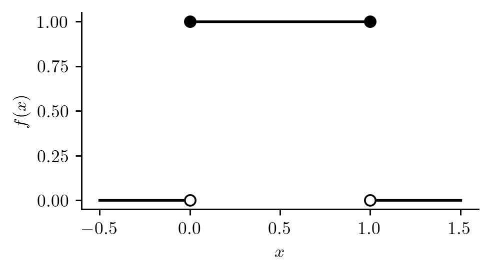

A continuous random variable \(X\) is a random variable whose support (the set of values it can take) is an interval or a union of intervals. The idea is that we cannot list, or even begin listing all of the values \(X\) can take.
Example 12.1 (Hourly departing shuttle) Suppose you will land at an airport and ride to a hotel in an hourly departing ground shuttle. Defining \(X\) as the time you must wait for the shuttle (in hours), the support of \(X\) is \(\mathcal{X}= [0,1]\).
Recall that the probability distribution of a random variable \(X\) tells us which values \(X\) can take and assigns probabilities to the values. Since a continuous random variable \(X\) takes values on an interval, we cannot tabulate its probability distribution as we could for a discrete random variable; we therefore have different ways of writing down probability distributions for continuous random variables. Before coming to these, however, we must have a philosophical discussion
Probability distributions of continuous random variables assign nonzero probabilities only to intervals, not to single values. In the example of the hourly departing shuttle, if \(X\) is the wait time in hours, we might have \[
\begin{align*}
P( 1/4 < X < 1/2) &=1/4 \\
P(X > 1/2) &= 1/2 \\
P(X = 1/3) &= 0,
\end{align*}
\] having the interpretations \[
\begin{align*}
P( \text{wait between 15 and 30 minutes }) &=1/4 \\
P(\text{wait more than 30 minutes}) &= 1/2 \\
P(\text{wait exactly 20 minutes}) &= 0,
\end{align*}
\] respectively.
Why have we said that the last probability should be equal to zero? To understand this, note that \(20\) minutes means \(20.000000000\) minutes, with zeroes going on forever. Now, suppose we experience a wait time of \(20.15983145677\) minutes. How can we say that \(P(X = 20.15983145677) = 0\) when we have just experienced it? To understand this, we must imagine repeating our statistical experiment over and over again. If we wait for the shuttle on \(9\) more occasions, we will not likely experience a wait time of \(20.15983145677\) minutes a second time. If we wait for the bus a total of \(1000\) times, chances are still very small that we will experience the wait time of \(20.15983145677\) minutes again. Even if we wait for the bus a million times, the chances that we will observe the wait time of \(20.15983145677\) minutes again are very very small. So, if we were to wait for the bus again and again and again and again on into eternity, we may interpret \(P(X = 20.15983145677)\) as the proportion of all of our waiting times which we expect to be equal to \(20.15983145677\) minutes. This proportion approaches zero as we repeat our experiment over and over again. For this reason we have the following proposition:
Proposition 12.1 (Zero point probabilities for continuous random variables) If \(X\) is a continuous random variable, then \(P(X = x) = 0\) for all \(x\).
Note how different this is from the case of discrete random variables. For discrete random variables, the probability distribution consists of an assignment of a probability to each distinct value the random variable can take. That is, if \(X\) is discrete with support \(\mathcal{X}=\{x_1,x_2,\dots\}\), then we have \(P(X = x_i) = p_i\), with \(p_i \in [0,1]\) for \(i=1,2,\dots\) (see Definition 8.1).
Since a continuous random variable may take any value in an interval, we cannot list or begin to list the distinct values in may take; we therefore cannot assign a probability to each one. So, in the case of continuous random variables, we assign probabilities to intervals of values rather than to distinct individual values. This is often done with the aid of what is called a probability density function.
Definition 12.1 The probability density function (PDF) of a continuous random variable \(X\) is the function \(f\) satisfying \[
P(a \leq X \leq b) = \int_a^bf(x)dx
\] for all \(a < b\).
Now, for those who have not taken calculus, the notation on the right hand side of the above is read “the integral of \(f\) from \(a\) to \(b\)”, and it is equal to the area between the function \(f\) and the horizontal axis over the interval \([a,b]\). That is, \[
\int_a^bf(x)dx = \text{Area between $f$ and the horizontal axis on the interval $[a,b]$}.
\]
Example 12.2 (Hourly shuttle continued) In the hourly departing shuttle example, the PDF of the random variable \(X\) might be the function \[
f(x) = \left\{\begin{array}{cc}
1,& 0 \leq x \leq 1\\
0,& \text{ otherwise,}
\end{array}\right.
\] which is plotted in Figure 12.1. The distribution with this PDF is called the uniform distribution on \([0,1]\).
Code
import numpy as npimport matplotlib.pyplot as pltimport scipy.stats as statsplt.rcParams['figure.dpi'] =128plt.rcParams['savefig.dpi'] =128plt.rcParams['figure.figsize'] = (4, 2)plt.rcParams['text.usetex'] =Truefig, ax = plt.subplots()col ='black'ax.plot([-1/2,0],[0,0],color=col)ax.plot([0,1],[1,1],color=col)ax.plot([1,3/2],[0,0],color=col)ax.plot(0,0,marker='o',color='white')ax.plot(0,0,fillstyle='none',marker='o',color=col)ax.plot(0,1,'o',color=col)ax.plot(1,1,'o',color=col)ax.plot(1,0,marker='o',color='white')ax.plot(1,0,fillstyle='none',marker='o',color=col)ax.spines['top'].set_visible(False)ax.spines['right'].set_visible(False)ax.set_ylabel('$f(x)$')ax.set_xlabel('$x$',color=col)plt.show()

Figure 12.1: Probability density function of the uniform distribution on \([0,1]\).
In order to compute the probability, say \(P(1/4 \leq X\leq 1/2)\) based on this PDF, we would compute the area under it between the values \(1/4\) and \(1/2\). This is depicted in Figure 12.2 and is equal to \(1/4\), since the height of the PDF over the interval \([1/4,1/2]\) is equal to one.
Figure 12.2: Computing \(P(1/4 \leq X \leq 1/2 ) = 1/4\) as an area under the PDF \(f(x)\).
We next give two properties possessed by every PDF.
Proposition 12.2 (Properties of probability density functions) If \(f\) is a PDF then
\(f(x) \geq 0\) for all \(x \in \mathbb{R}\).
\(\int_{-\infty}^\infty f(x)dx = 1\), that is, the total area between \(f\) and the horizontal axis is equal to \(1\).
The first property comes from the fact that if a function \(f\) were less than \(0\) over some interval, one could obtain a negative value for a probability of the form \(P(a \leq X \leq b)\). Since probabilities cannot (according to one of the Kolmogorov axioms) be negative, a function cannot be a PDF if it takes negative values over any interval. The second comes from observing that we should have \(P( - \infty < X < \infty) = 1\).
The pictures of the PDF in the example of the hourly shuttle can also serve to explain why we set \(P(X = x) = 0\) for all \(x\) when \(X\) is a continuous random variable: Since we compute probabilities for continuous random variables as areas under the PDF, we would compute \(P(X = x)\) as the area under the PDF at a single point, that is we would compute the area of a line, which is zero.
Note that for any continuous random variable \(X\), we have \[
P( a \leq X \leq b) = P(a < X \leq b) = P( a \leq X < b) = P(a < X < b)
\] for any \(a < b\), since \(P(X = a) = P(X = b) = 0\). So for a continuous random variable, there we may interchange strict inequalities (‘\(<\)’,‘\(>\)’) and non-strict inequalities (‘\(\leq\)’,‘\(\geq\)’) in our probability statements.
In the hourly shuttle example, the random variable \(X\) had support on the bounded interval \([0,1]\). In the next example the random variable has support on the non-negative real numbers \([0,\infty)\).
Example 12.3 (Spinning a top) Spin a top and let \(X\) be time (in seconds) until the top falls. The random variable \(X\) may have a PDF such as the one in Figure 12.3. Note that this pdf takes positive values, \(f(x) > 0\), over the support \(\mathcal{X}= [0,\infty)\) and is equal to zero, \(f(x) = 0\), for all \(x < 0\). We see that longer and longer spinning times are assigned smaller and smaller probabilities.
Figure 12.4: Probability density function with support on \([0,\infty)\) with probability \(P(X > 2.5)\) shown as area under the curve.
Next we consider an example in which the support of the random variable is the entire real line \(\mathcal{X}= (-\infty,\infty)\).
Example 12.4 (Today’s max temp minus yesterday’s) Suppose we subtract today’s max temperature from yesterday’s, calling this \(X\). Then \(X\) might have a PDF like the one in Figure 12.5. According to this PDF, temperatures nearest to yesterday’s temperatures are the most likely, whereas temperatures further and further above or further and further below yesterday’s temperature are less and less likely.
Figure 12.5: Probability density function with support on \((-\infty,\infty)\).
The probability that today’s temperature is lower than yesterday’s by at least two degrees would be obtained as the area under the curve to the left of \(-2\), as shown in Figure 12.6.
Figure 12.6: Probability density function with support on \((-\infty,\infty)\) with probability \(P(X < -2)\) depicted.
Recall the definition of the cumulative distribution function given in Definition 8.5. For discrete random variables, the CDF \(F(x)\) is computed by summing probabilities over all values in the support less than or equal to \(x\); for continuous random variables with a PDF, the CDF \(F(x)\) is computed as the area under the PDF to the left of the value \(x\). That is:
Proposition 12.3 (CDF for continuous random variables) Let \(X\) be a continuous random variable with PDF \(f\). Then the CDF of \(X\) is given by \[
F(x) = \int_{-\infty}^x f(t)dt
\tag{12.1}\] for all \(x\).
The integral in Equation 12.1 gives the area under the PDF to the left of the value \(x\).
For CDF of the probability distribution of today’s temperature minus yesterday’s temperature is pictured in the right panel of Figure 12.7. The left panel shows the PDF, with the region under the curve to the left of \(x = -2\) shaded. The height of the CDF at \(x=-2\) is equal to the area of this shaded region. That is, \(F(-2) = P(X \leq -2)\).
Figure 12.7: Probability density function along with cumulative distribution function, each showing \(P(X \leq -2)\).
Along with the CDF of a random variable, we are often interested in a function called the quantile function. The quantile function returns quantiles of a random variable, where a quantile is the same as a percentile, but corresponds to a proportion rather than a percentage. For example, if you are at the \(90\)th percentile in height, then \(90\%\) of people have a height less than or equal to your height; if you are at the \(0.90\) quantile of height, than the proportion \(0.90\) of people have a height less than or equal to yours height, which means the same thing.
Definition 12.2 (Quantiles of a random variable) For \(p \in (0,1)\) the \(p\) quantile of a random variable \(X\) is the smallest number \(q\) such that \[
P(X \leq q) \geq p.
\]
The above definition may seem a little complicated. The reason the definition is somewhat awkward is that it accommodates both discrete and continuous random variables. If we have a continuous random variable with a “nice” distribution in the sense that \(P(X \leq x)\) is a strictly increasing function of \(x\), we can more simply define the \(p\) quantile of \(X\) as the value \(q\) such that \(P(X \leq q) = p\). For discrete random variables, depending on the value of \(p\), we cannot always find a value \(q\) such that \(P(X \leq q) = p\). To see why, study the CDF depicted in Figure 8.1, which is the CDF of the number of heads in two coin flips. If we set \(p = 1/2\), we cannot find a value \(q\) such that \(P(X \leq q) = 1/2\). By Definition 12.2, however, we would say that the \(p=1/2\) quantile is \(q = 2\), which is the smallest value of \(q\) such that \(P(X \leq q)\) is greater than or equal to \(1/2\).
For a continuous random variable with a strictly increasing CDF, like that depicted in Figure 12.7, the \(p\) quantile can be found by drawing a horizontal line at height \(p\) and noting where the CDF crosses this line; dropping a vertical line down to the horizontal axis from this point gives the quantile. Thus in this situation, quantile can be computed from the inverse \(F^{-1}\) of the CDF \(F\), which leads us to the definition of the quantile function given next:
Definition 12.3 (Quantile function for a continuous random variable) If \(X\) is a continuous random variable with support \(\mathcal{X}\) and with CDF \(F\) which is strictly increasing over \(\mathcal{X}\), then its quantile function is defined as \[
Q(p) = F^{-1}(p)
\] for \(p \in (0,1)\), where is the inverse function of \(F\).
Once we have the quantile function \(Q(p)\) of a random variable, we can compute the \(p\) quantile as \(q = Q(p)\). Figure 12.8 depicts finding the \(0.5\) quantile, also called the median of a continuous random variable.
Figure 12.8: Illustration of locating the median, i.e. the \(0.5\) quantile for a continuous random variable with strictly increasing CDF.
Lastly we discuss how to obtain the mean and the variance of continuous random variables.
Proposition 12.4 (Mean and variance of continuous random variables) If \(X\) is a continuous random variable with PDF \(f\), then the expected value and variance of \(X\) are obtained as
Just as with discrete random variables, the expected value of a continuous random variable is the “balancing point” of the distribution—the location on the horizontal axis such that if a fulcrum were placed there, the PDF (if made of solid mass), would balance. Moreover, if many realizations of the random variable were obtained, the average of these realizations should be close to the expected value. The variance, just as with discrete random variables, is a measure of how spread out realizations of the random variable are likely to be.